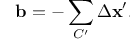

Dislocation analysis (DXA)

This analysis modifier identifies all dislocation line defects in an atomistic crystal, determines their Burgers vectors, and outputs a line representation of the dislocations. The modifier implements the so-called Dislocation Extraction Algorithm (DXA), a computational method developed by the author of OVITO. The original DXA method has been described in the paper
The current implementation in OVITO follows a newer, more general approach, which has been published in a follow-up paper:
Please cite the latter reference when publishing dislocation analysis results. A short overview on how the DXA works can be found toward the end of the page.
The DXA transforms the original atomistic representation of a dislocated crystal into a line-based representation of the dislocation network. It determines the Burgers vector of each dislocation and identifies dislocation junctions. The algorithm can recognize partial dislocations and also certain secondary grain boundary dislocations (e.g. twinning dislocations in FCC).
Input
Output
Note that, even though the implementation of the DXA in OVITO is highly optimized, the algorithm is computationally expensive and requires sufficient working memory. The approximate memory requirement is 1 kilobyte per input atom! Thus, to analyze a dataset with 1 million atoms up to 1 GB of free memory is required.
OVITO allows you to save the dislocation lines extracted by the modifier to a so-called Crystal Analysis (CA) file using the program’s file export function. This allows you to further process the dislocation lines outside of OVITO or to reload the dislocation data at a later time without the need to re-perform the computationally expensive analysis. The CA file format is specified below.
Note
The DXA produces dislocation lines and Burgers vectors that follow the left-hand start-finish (LH/SF) convention.
Parameters
- Input crystal type
This parameter specifies the lattice type of the input crystal. Currently, simple crystal structures such as FCC, HCP, BCC, and diamond are supported. The DXA ignores the chemical atom types. Thus, a zincblende structure, for example, can simply be treated as a cubic diamond crystal.
The selected input crystal type tells OVITO how to identify the local coordination structure of each atom and how to compute the local crystal orientation. The selected crystal type also determines how the computed Burgers vectors are represented (three-component notation for crystals with cubic symmetry, four-component notation for hexagonal crystals).
Furthermore, for each available crystal type, OVITO defines a set of dislocation classes into which the extracted dislocation lines are grouped. Dislocations with a Burgers vector that does not belong to any of the predefined families are assigned to the category “Other”. Currently, the list of dislocation classes is hardcoded and cannot be changed by the user. Please contact the developer if you think that a new dislocation class should be added for a certain crystal type.
- Trial circuit length
This sets the maximum length of trial Burgers circuits, which are constructed by the DXA to discover dislocations in the crystal. The maximum circuit length is specified in terms of the number of atom-to-atom steps. Dislocations whose core is too wide to be enclosed by a circuit of the given maximum length will not be found by the algorithm.
The default value for this parameter is 14, which is sufficient to discover all typical lattice dislocations in the types of crystals supported by the modifier.
- Circuit stretchability
Once the DXA has discovered a dislocation line and constructed a Burgers circuit around its dislocation core, the algorithm advances the circuit along the dislocation to generate a line presentation of the dislocation. The thickness of the core may vary along the dislocation (e.g. it becomes wider close to a dislocation junction). This is why the circuit has a certain amount of elasticity, which is set by the stretchability parameter. A value of 9 (the default), for example, allows the circuit to expand to a length that is nine steps longer than the limit set by the trial circuit length parameter above.
- Use only selected particles
This option restricts the analysis to the subset of currently selected atoms. When activate, unselected atoms will be ignored (as if they did not exist) and will be assigned the structure type “Other”. This option can be useful if you want to identify dislocations in a crystal with a structure not supported by the modifier, but which has a sublattice that is supported (and you do not want to delete atoms belonging to the other sublattice(s) for some reason).
- Output interface mesh
Tells the analysis modifier to display the so-called interface mesh, a closed manifold which separates the good crystal region from the bad crystal region. The interface mesh is normally not of interest and this option exists only for debugging purposes.
- Generate perfect dislocations
Restricts the identification to perfect dislocations. Normally, the DXA tries to identify partial dislocations (in FCC, HCP and diamond lattices). This option turns the identification of stacking faults, partial dislocations and also twinning dislocations off. As a result, the network produced by DXA will consist of perfect dislocations only, and leading and trailing partials of dissociated dislocations will be output as one line instead of two. This option is useful in certain situations, e.g. when the extracted line network is going to be used as starting configuration for a discrete dislocation dynamics simulation that does not support partial dislocations. Make sure you set the Trial circuit length and Circuit stretchability to higher values when using this option, because longer Burgers circuits are required to trace perfect dislocations which are dissociated.
- Line smoothing level
The raw dislocation lines generated by the DXA are typically noisy (due to the atomistic nature of the dislocation cores) and need to be post-processed to produce smooth dislocation curves. This parameter controls the number of iterations of the smoothing algorithm to perform.
- Line point separation
The raw dislocation lines generated by the DXA consist of a very dense sequence of points. To produce smooth lines, the number of points is reduced in a post-processing step. This parameter controls the desired distance between successive points along a dislocation line. The distance is only an approximate number and is measured in multiples of the interatomic spacing in the underlying crystal.
- Surface smoothing level
The raw defect mesh generated by the DXA contains atomically sharp steps and needs to be post-processed to produce a smooth surface. This parameter controls the number of iterations of the smoothing algorithm to perform.
Outputs
After analyzing the atomistic input crystal, the modifier produces several outputs:
- Dislocation lines
The dislocations identified by the DXA are continuous curves in 3d space. Each dislocation line has a start and an end point assigned by the algoritm. The ordering of these points defines the orientation of the dislocation line (the line sense). Each endpoint may be part of a junction, where it is connected to other dislocations. Otherwise it is a dangling end, which means the dislocation ends in another kind of extended crystal defect (a free surface or a general grain boundary, for example).
If a dislocation line is a loop, its starting point forms a 2-junction with its own endpoint, which both coincide. They will be located at an arbitrary position along the closed loop. Note that such topological loops are not necessarily circular loops. They can also be infinite linear dislocations that run through a periodic boundary of the simulation box, thus connecting back to themselves.
Note
DXA gives no guarantees that a dislocation line will have a particular line direction. The orientational sense of the dislocation line, i.e. which of its two end points is considered the beginning of the line and which the end, can change unpredictably.
The reason is that dislocations are arbitrary closed or open curves in 3-dimensional space whose beginning and end are generally indistinguishable - so no preferred direction exists that could be used by the algorithm to order the two opposite ends. Furthermore, DXA analyzes each frame of a simulation trajectory independently, which means results will generally vary from frame to frame.
During each analysis run, the DXA algorithm randomly assigns one of the two possible directions to each identified dislocation line. Note that this ambiguity applies only to the line directions but not the calculated Burgers vectors. The Burgers vector is fixed with respect to the line sense chosen by the algorithm (so it also changes sign if the line direction is reversed). The DXA algorithm always outputs dislocations that follow the left-hand start-finish (LH/SF) convention!
In addition to this geometric information, each dislocation is asscicated with two additional properties: The id of the crystallite cluster the dislocation is embedded in (see below) and its Burgers vector. The Burgers vector computed for a dislocation is its true Burgers vector, i.e. a vector expressed in the ideal reference crystal frame.
- Defect mesh
As part of the dislocation identification process, the DXA divides the input crystal into a so-called good and a bad region. Within the good crystal region the algorithm was able to map atoms to a perfect reference state. This part of space includes atoms that are in a perfect crystalline environment (which may be subject to slight elastic distortions), stacking faults, and coherent grain boundaries. The bad crystal region, in contrast, comprises those parts where the atomic arrangement does not resemble a perfect crystal (or any of the planar defects mentioned above). The cores of dislocations belong to the bad crystal region as well as other, unidentified defects, the outer surfaces, and voids within the crystal.
The DXA constructs the dividing surface which separates the good from the bad crystal region. This interface mesh is a two-dimensional manifold that encloses the dislocation cores and all other defects in the crystal (except stacking faults and certain grain boundaries, which have been classified as being part of the good region). This intermediate geometric data structure allows the DXA to effectively find dislocation lines by applying the Burgers circuit construction. Those parts of the interface mesh which are associated with dislocations will subsequently be removed. The remaining parts, which enclose non-dislocation defects, form the so-called defect mesh. It is a triangulated mesh, which is output by the DXA analysis modifier, and which represents the bad crystal regions that have not been classified as dislocations.
- Atomic structure types
As part of the DXA a structure identification is performed, in which the local environment of each atom is analyzed to identify atoms that form a perfect crystal lattice. This information is output by the modifier as a new particle property named
Structure type. The atomic structure identification is based on the common neighbor analysis method, and the results are very similar to what you would get by applying the Common neighbor analysis or the Identify diamond structure modifier.Note that the list of structure types the algorithm looks for depends on the selected input crystal type. For example, if the selected input crystal type is “FCC”, then the DXA will only look for atoms in FCC and HCP arrangements. The latter form stacking faults and coherent twin boundaries and are therefore important for the identification of partial dislocations in the FCC lattice.
- Atomic clusters
After the atomic structure identification step is completed, the DXA combines atoms into clusters. A cluster is a contiguous crystallite consisting of atoms of the same structural type (e.g. “FCC”). Atoms that are part of an FCC stacking fault, for instance, are grouped into an HCP cluster. Another example: An FCC bicrystal with a coherent twin boundary gets divided into three clusters: Two FCC clusters for the grains and one HCP cluster that comprises the atoms of the boundary core.
Each cluster created by the algorithm has a unique ID (a positive integer), and the modifier outputs the assignments of atoms to clusters as a new particle property named
Cluster, containing the ID of the cluster the atom belongs to. Atoms with an unidentified coordination structure are not part of any cluster, which is indicated by the special value 0.- Cluster graph
The atomic clusters form an abstract adjacency graph, which is built up by the algorithm. For example, a bicrystal with two grains separated by a grain boundary can be described in terms of a graph with three nodes (the three atomic clusters) and two edges connecting both grains with the grain boundary cluster. Each cluster establishes a local lattice coordinate system, and the true Burgers vector computed by the DXA for a dislocation embedded in a crystal cluster is expressed in this coordinate frame. A graph edge connecting two adjacent cluster carries information about their crystallographic orientation relationship. This orientation relationship, which is described in terms of a transformation matrix, can be used to rotate vectors from the lattice coordinate frame of one grain to other grain. Ultimately, this abstract description of a polycrystalline microstructure enables the identification of dislocations (which can involve Burgers circuits that cross grain boundaries and stacking faults).
Even though the cluster graph is generated by the DXA modifier as an intermediate data structure, OVITO currently provides no means for the user to access or visualize this output data. Future versions of the program may come with a user interface that allows to inspect the generated cluster graph.
Note that you can position the mouse cursor over an extracted dislocation line in the viewports to let OVITO display its properties in the status bar of the main window. Alternatively, you can use OVITO’s data inspector to see a full list of all dislocation lines found by the DXA and look at individual dislocation lines.
The dislocation lines extracted by the modifier can be exported using OVITO’s file export function. Currently, a simple text-based output format is supported, which is also used by another code (Crystal Analysis Tool) that implements the DXA. The CA dislocation file format is specified below. OVITO can also import CA files, which allows saving the results of a (possibly) expensive dislocation analysis to disk and then reloading them again later.
Technical background
What follows is a brief summary of the Dislocation Extraction Algorithm (DXA). If you are interested in more details, please have a look at this publication.
Burgers circuit method to detect and identify a dislocation. A closed circuit around the dislocation is translated from (a) the dislocated crystal to (b) the perfect reference crystal. The closure failure is called the Burgers vector of the dislocation.
The fundamental concept underlying the DXA is the Burgers circuit construction [Frank1951], which is the canonical method already proposed in the 1950s to discriminate dislocations from other crystal defects and to determine their Burgers vectors. In the formulation employed here, a Burgers circuit C is a path in the dislocated crystal consisting of a sequence of atom-to-atom steps (line elements \(\Delta \mathbf{x}\)), as shown in the figure.
We assume that there exists a mapping \(\Delta \mathbf{x} \rightarrow \Delta \mathbf{x}'\) that translates each line element of the path to a corresponding image, \(\Delta \mathbf{x}'\), in a perfect crystal lattice. Summing these transformed line elements algebraically along the associated path, C’, gives the true Burgers vector of the dislocation enclosed by C:
The Burgers vector \(\mathbf{b}\) is the closure failure of the path after transferring it to the perfect reference crystal. Notably, the resulting vector \(\mathbf{b}\) stays the same if we change the original circuit C, as long as it still encloses the same dislocation. On the other hand, if \(\mathbf{b} = \mathbf{0}\), we know that the Burgers circuit did not enclose any defect with dislocation character (deliberately ignoring the possibility that the circuit encloses multiple dislocations whose Burgers vectors cancel).
Typically the Burger circuit construction is performed by hand to analyze two-dimensional crystal images obtained from high-resolution microscopy or atomistic computer simulations. Human intuition and cognitive capabilities are required to spot irregularities in the crystal lattice which are potential dislocation defects and to map path steps in elastically distorted crystal regions to the ideal lattice. Automating these tasks poses a particular challenge when developing a dislocation identification algorithm. First of all, an efficient strategy is needed that guides the construction of Burgers circuits, given that there is no a priori knowledge of the dislocation positions, because it clearly is not feasible to enumerate all possible circuits in a crystal to find the contained dislocations.
(a) Delaunay tessellation of a dislocated crystal. Defect core atoms as identified by a structural characterization technique are shown in a darker color. (b) Colored arrows indicate the computed mapping of tessellation edges to corresponding ideal lattice vectors. Bad tessellation elements, for which the mapping to the perfect reference lattice cannot be determined, have been marked with a gray color. (c) Color legend for the eight different ideal lattice vectors appearing in (b).
Within the DXA framework, this problem is addressed by using the Delaunay tessellation of the dislocated input crystal (figure a). The edges of this tessellation define the set of elementary atom-to-atom steps from which Burgers circuits will be constructed. Before generating any circuits, the algorithm first tries to map each edge of the Delaunay tessellation to a corresponding vector in the perfect reference crystal (figure b). This is done with the help of the Common Neighbor Analysis (CNA) method, which finds atoms that form a perfect (but elastically strained) crystal lattice. Delaunay edges connecting a crystalline atom with one of its neighbors are mapped to the corresponding ideal lattice vectors by the algorithm.
Within the cores of dislocations, the atomic arrangement deviates considerably from a perfect crystal. Hence, the CNA will classify these core atoms as non-crystalline atoms. All tessellation edges adjacent to such atoms will be marked as “bad” by the algorithm, effectively excluding them from any Burgers circuits to be constructed. This corresponds to the original principle formulated by F. C. Frank, which states that a valid Burgers circuit must not pass through so-called bad crystal. Good crystal regions, in contrast, are defined as those parts where the mapping to the perfect reference crystal is non-ambiguous. In fact, the DXA also divides space into good and bad regions in this spirit as shown in figure (b). Those Delaunay elements (triangles in 2D, tetrahedra in 3D systems) that are adjacent to one or more bad edges, which could not be mapped to an ideal lattice vector, are themselves marked as bad elements, while all others are considered good volume elements.
Now it is time to think about how to efficiently construct trial Burgers circuits to find and classify the dislocations in the crystal. As mentioned above, the total number of possible circuits in a three-dimensional crystal is prohibitively large, and we need to find a way to considerably reduce the search space. The solution is provided by the aforementioned partitioning into good and bad regions, which defines a boundary surface separating the two regions. In three-dimensional systems this boundary is called the interface mesh and is constituted by those triangular Delaunay facets having a good tetrahedral element on one side and a bad element on the other.
Illustration of the line sweeping phase of the DXA. After constructing the interface mesh enclosing the defect core atoms, the algorithm uses a Burgers circuit on the interface mesh to sweep the dislocation line. While the Burgers circuit is being advanced in a step-wise fashion, triangle by triangle, a continuous line representation of the dislocation defect is produced.
The interface mesh, which is depicted in this figure, is a two-dimensional manifold that encloses all defects in the crystal (including non-dislocation defects and even free surfaces of the crystal). Constructing trial Burgers circuits on this triangulated surface is sufficient to discover all dislocations. Moreover, this approach helps to ensure that the generated Burgers circuits enclose only single dislocation lines. Trial circuits generated by the DXA on the interface mesh are closed sequences of tessellation edges, and their Burgers vectors are computed from the equation above by summing the respective ideal lattice vectors, which were determined in the first algorithm step. All possible trial circuits up to some prescribed maximum length (modifier parameter Trial circuit length) can be efficiently enumerated using a recursive search algorithm.
The algorithm enumerates all possible circuits on the interface mesh in order of increasing length until one with a non-zero Burgers vector is encountered. This seed circuit is subsequently used to discover the rest of the dislocation line. This happens by advancing the circuit on the interface mesh and sweeping along the dislocation line as indicated in the figure. During this sweeping phase, a one-dimensional line representation of the dislocation is generated by computing the new center of mass of the circuit each time it advances along the boundary of the dislocation core. Here, a circuit can be pictured as a rubber band tightly wrapped around the dislocation’s core. As the circuit moves along the dislocation line, it may need to locally expand to sweep over wider sections of the core, e.g. kinks or jogs. To prevent the circuit from sweeping past dislocation junctions or interfaces, a hard limit is imposed on the maximum circuit length (modifier parameter Circuit stretchability).
CA file format
The dislocation lines extracted by the analysis modifier can be exported to this simple text-based file format, which is described next.
A CA file always begins with the string CA_FILE_VERSION followed by the file format version number.
The current version written by OVITO is 6.
The body of the file is divided into a sequence of sections, each section starting with an all-uppercase
keyword, e.g. STRUCTURE_TYPES or DISLOCATIONS. The order in which sections appear in the file is fixed,
but certain sections are optional and may be missing depending on the kinds of data that were exported.
When parsing a CA file, sections that are of no interest can be skipped by seeking to the next known keyword,
which always appears at the beginning of a new line.
The following sections can appear in a CA file:
- CA_LIB_VERSION
Version of the original Crystal Analysis Tool code that produced the file. Always
0.0.0for files written by OVITO.- METADATA
An optional line of additional information, e.g. the simulation timestep at which the dislocations have been extracted.
- STRUCTURE_TYPES
The number of lattice structures which will be defined next. OVITO writes a hard-coded list of lattice structures.
- STRUCTURE_TYPE
The unique ID of the lattice structure type.
- NAME
The human-readable short name of the structure.
- FULL_NAME
The human-readable long name of the structure.
- COLOR
The RGB color that represents the lattice structure in OVITO.
- TYPE
The kind of structure this is. OVITO only knows structures of type
LATTICE.- BURGERS_VECTOR_FAMILIES
The number of special dislocation types predefined for this lattice structure, which will be specified next.
- BURGERS_VECTOR_FAMILY
The ID of this predefined Burgers vectors family, followed by the human-readable name of the dislocation class, followed by the prototype Burgers vector (in Cartesian lattice coordinates), followed by the RGB color assigned to dislocation lines of this predefined type.
- END_STRUCTURE_TYPE
Marks the end of the definition of the current lattice structure type in the file.
- SIMULATION_CELL_ORIGIN
The Cartesian coordinates of the simulation cell corner.
- SIMULATION_CELL_MATRIX
Simulation cell matrix. Columns of this 3x3 matrix are the edge vectors of the simulation box.
- PBC_FLAGS
Periodic boundary condition flags for the three spatial directions.
- CLUSTERS
The number of crystallite clusters the atomistic solid was divided into by the DXA. What follows is the list of of crystallite clusters.
- CLUSTER
The unique ID of the crystallite atom cluster.
- CLUSTER_STRUCTURE
The lattice structure type of the crystallite. This is a reference to one of the structures type IDs defined under the
STRUCTURE_TYPESsection.- CLUSTER_ORIENTATION
A 3x3 transformation matrix that defines the orientation of the crystallite in the simulation coordinate system. It transforms lattice vectors to the spatial frame and includes the rotation of the crystallite, the lattice constant, and possible elastic strains of the crystal (averaged over all atoms that belong to the crystallite). Given a column vector in the lattice coordinate system, the corresponding spatial vector is obtained by left-multiplying the transformation matrix to the vector.
- CLUSTER_COLOR
A color assigned to the crystallite by OVITO.
- CLUSTER_SIZE
The number of atoms that are part of the crystallite.
- END_CLUSTER
Marks the end of this cluster definition in the file.
- DISLOCATIONS
The number of dislocation lines extracted by the DXA, followed by the definition of each line. Each dislocation line definition consists of the following information:
The zero-based index of the dislocation.
The Burgers vector of the dislocation in the local Cartesian lattice coordinate system of the crystallite cluster.
The ID of the crystallite cluster the dislocation is embedded in. This defines how the local Burgers vector is transformed to the global simulation coordinate system.
The number of vertices along the line.
The list of vertex coordinates. For closes loops, the first and the lattice vertex coincide. If the line crosses a periodic boundary of the simulation cell, vertex coordinates are unwrapped
- DISLOCATION_JUNCTIONS
Defines the connectivity between dislocation lines (i.e. dislocation junctions or nodes). This sections contains two text lines per dislocation defined in the
DISLOCATIONSsection. Each of the two lines contains two numbers. The first line defines what the end point (i.e. last vertex) of the dislocation is connected to, the second line specifies the connectivity of the starting point (i.e. first vertex) of the dislocation. The second number in each of the two text lines refers to the zero-based index of another dislocation the current dislocation is connected to. The first number, which can be either 0 or 1, specifies whether it is connected to the end (1) or the beginning (0) of that other dislocation line.This connectivity encoding is used to define dislocation nodes/junctions in terms of circular lists. For example, a node with three dislocation arms A, B, C is defined such that one end point of dislocation A points to an end point of B, which in turn points to an end point of C, which in turn points again back to A.
In the output of the DXA algorithm 1-nodes, 2-nodes, and n-nodes (n>2) are possible. A 1-node is a dangling end of a dislocation, which terminates at the surface of a crystal or merges into another kind of defect (e.g. a grain boundary). In this case the circular connectivity list consists only of one line end, which points to itself. 2-nodes occur for closed dislocation loops or infinite lines that cross a periodic boundary. 3-nodes and higher are regular dislocation junctions.
See also
ovito.modifiers.DislocationAnalysisModifier (Python API)